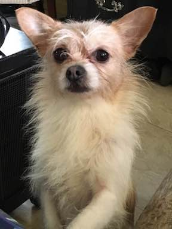
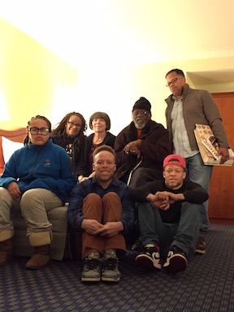
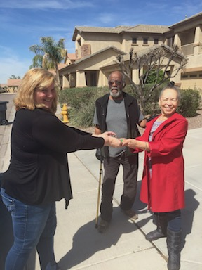
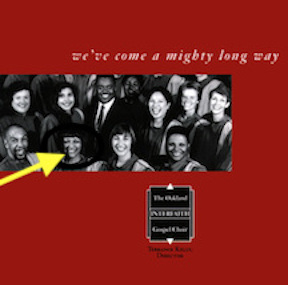
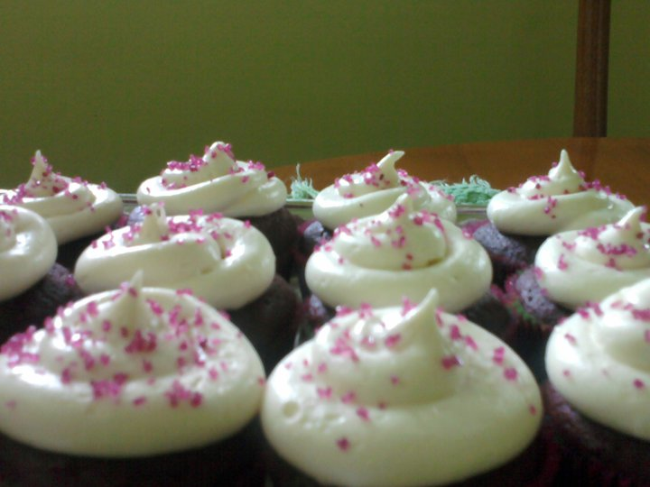

I'm married to my wonderful loving husband of 27 years. I'm blessed with 3 beautiful offspring, aged 27, 20 and 16. My kids are my pride and joy. I'm a San Francisco Native and I've lived in my neighborhood long enough to see the Mayonaise factory across the street morph into to two other businesses. The latest one is a much needed kidney dialysis center. I live in the house I grew up in and I know almost all of the people who live on our block. I like that because we take care of each other.
God is my rock. He has sustained me throughout my life experiences. If you don't get it, or agree with me its ok. To each his own.
I'm a retired AT&T employee with 30 years of experience in the telecommunications industry. For the last 15 years of my career I've been an integral player on team that had the task of automating manual processes associated with ordering AT&T product. I'm very familiar with the Software Development Lifecycle process as it relates to AT&T. I have 15 years of experience in drafting software documentation, user experience testing, defect management, and end user training. In my last position, I was responsible for the system support documentation and user communications. I created and managed the system wiki which was repository for the training documents, test cases, project documents and more. In my next job I want the opportunity to use my creativity more, whatever that looks like.
I'm taking classes at Udemy.com and Udacity.com, two online colleges so that I can further enhance my technical skillset. I want to be more marketable. I enrolled in Mission Tech so that I can learn a few programming languages as many of the jobs i'm interested in require some programming skill. In addition to the technical courses, I also will be taking voice and possibly an art class because those are things I like to do.

This is Roxy my 5th child

My immediate family

My mom and dad, my hearts.

My first album from many years ago. I'm a lead soloist

My specialty, people usually order these.